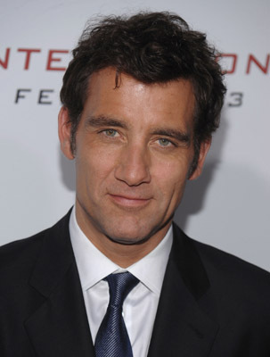
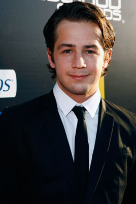
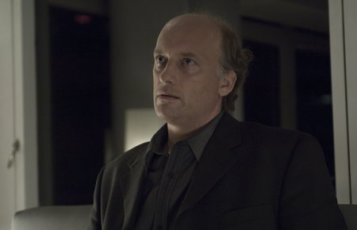
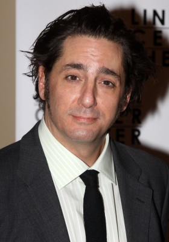
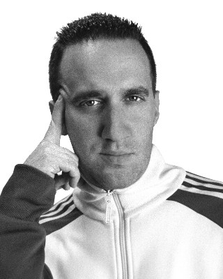
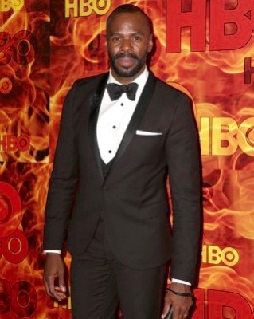
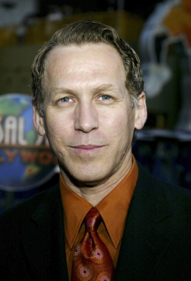

IMDB-Wertung: 8.5 / 10
IMDB-Wertung: 8.5 / 10  Metascore: 0
Metascore: 0 
New York im Jahre 1900. Im Knickerbocker Hospital schaffen Chirurgen, Ärzte und sämtliche Mitarbeiter ganz neue Standards in Sachen medizinischer Versorgung - und dies in einer Zeit, in der die Sterblichkeitsraten bei Patienten besonders hoch ist und Antibiotika noch nicht existieren. An vorderster Front: Dr. John W. Thackery.
Jahr: 2014
Dauer: 55 Minuten
FSK: 16
Land: USA Studio: CinemaxTonspuren:
Untertitel:
Auflösung: 720p (1280x720) Größe: 1009 MB
Genre: Drama, TV-Serie
Regisseur:  Steven Soderbergh
Steven Soderbergh
Drehbuch: Jack Amiel
Soundtrack:
Darsteller:
-  Clive Owen als Dr. John W. Thackery
- André Holland als Dr. Algernon Edwards
- Jeremy Bobb als Herman Barrow
- Juliet Rylance als Cornelia Robertson
- Eve Hewson als Lucy Elkins
-  Michael Angarano als Dr. Bertie Chickering Jr.
- Cara Seymour als Sister Harriet
- Eric Johnson als Dr. Everett Gallinger
 Chris Sullivan als Tom Cleary
Chris Sullivan als Tom Cleary- Grainger Hines als Captain August Robertson
- Zuzanna Szadkowski als Nurse Pell
- Maya Kazan als Eleanor
- Ylfa Edelstein als Nurse Baker
- Lucas Papaelias als Eldon Pouncey
 Leon Addison Brown als Jesse Edwards
Leon Addison Brown als Jesse Edwards- Charles Aitken als Henry Robertson
- Tom Lipinski als Phillip Showalter
- Jennifer Ferrin als Abigail Alford
- Happy Anderson als Jimmy
- Perry Yung als Ping Wu
-  Frank Wood als Mr. Havershorn
- Ying Ying Li als Lin-Lin
- Suzanne Savoy als Victoria Robertson
- Richard James Porter als Monsignor Joseph Mills Lawlor
- David Fierro als Inspector Jacob Speight
- Rachel Korine als Junia
- Michael Nathanson als Dr. Levi Zinberg
- Molly Price als Effie Barrow
- Michael Berresse als Parke Davis Rep.
- Gary Simpson als Hobart Showalter
-  Reg Rogers als Dr. Bertram Chickering, Sr.
- Arielle Goldman als Genevieve
- Annabelle Attanasio als Dorothy Walcott
- Johanna Day als Eunice Showalter
- Erin Wilhelmi als Lottie
- Zaraah Abrahams als Opal Edwards
 Matt Frewer als Dr. J.M. Christiansen
Matt Frewer als Dr. J.M. Christiansen-  Danny Hoch als Bunky Collier
- Collin Meath als Phinny Sears
-  Colman Domingo als Dr. Russell Daniels
- Andrew Rannells als Frazier H. Wingo
-  Stephen Spinella als A.D. Elkins
- Ben Livingston als Dr. Mays
- Brian Kerwin als Corky
- Miranda Gruss als Zoya
- Pei Pei Lin als Delores
- Rebecca Gruss als Nika
- Ghana Leigh als Miss Odom
- Emily Bergl als Mrs. Hemming
- Melissa Errico als Catherine Christiansen
Datei: X:\HD-Serien\Knick, The\S01\The Knick S01E01.mkv seit 06.09.2017
Festplatte: HD Serien(I-ST)
 Es gibt insgesamt 182 Filme in der Gruppe 'HD-Serien'
Es gibt insgesamt 182 Filme in der Gruppe 'HD-Serien'
")